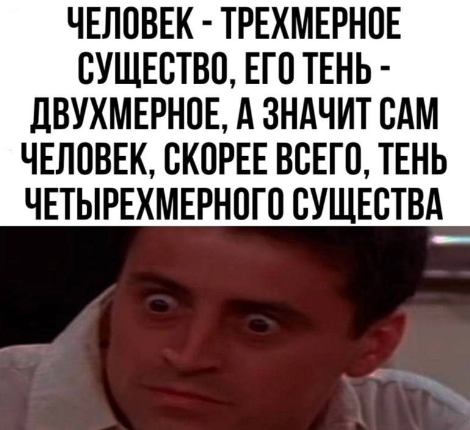

если за четвёртое измерение взять время, то человек это такой длинный червяк, который начинается в момент
если за четвёртое измерение взять вариант на дереве возможных вариантов развития событий, ну типа проспал или нет, успел на транспорт или нет, выжил или нет, то человек это такая расширяющаяся (иногда сужающаяся) воронка. А то трёхмерное тело, которое мы привыкли считать человеком - это лишь тень, срез этого четырёхмерного человека, на трёхмерном кадре варианта из которого мы за этим человеком наблюдаем. Правда если вариантов нет, а есть только жёсткая причинно-следственная связь, то полагаться на "другой вариант выживет" и бесконечную мультивселенную не стоит.
а если представить четырёхмерное пространство, оставив время, вариант, температуру и прочие измерения в стороне, то возможно человек и выпирает по четвёртому измерению пространства, но сам этого пока не ощущает и воспользоваться этим не может. Может только представить четырёхмерное пространство.